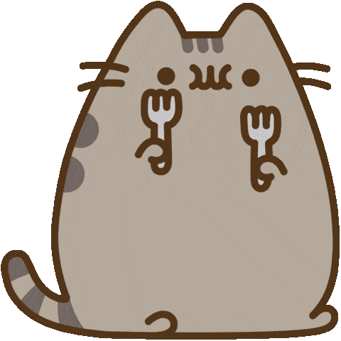

My Art
Art is one of my hobbies and it's one that I can half do properly. The following are four of my pieces. |
Nikki spiking a volleyball (watercolor with Micron Pens) | "Pear hole"(acrylic) | "Pain" from:Naruto(pencil crayons, Micron Pens with watercolor) | Recreation of Starry Night(acrylic) |

Other Hobbies
|  |  |
|
| Biking with my friends is also a "hobby" of mine, We usually go to bike trails such as Taylor Creek.(During summer of course) | I don't know if eating counts as a hobby, but I'm going to put it here because I love eating. In fact I eat everyday. | When I'm not outside or doing homework/school stuff, you can find me reading. During quarantine I've reverted to my toxic non-stop reading phase. |